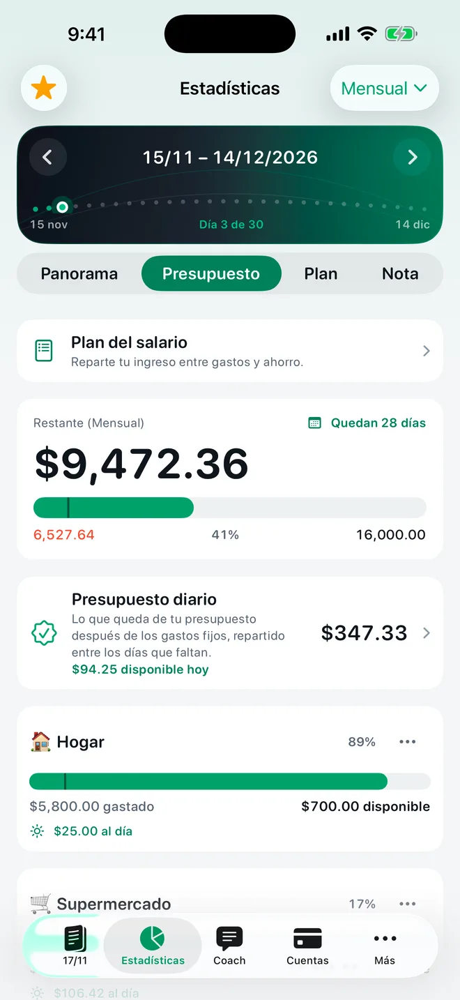
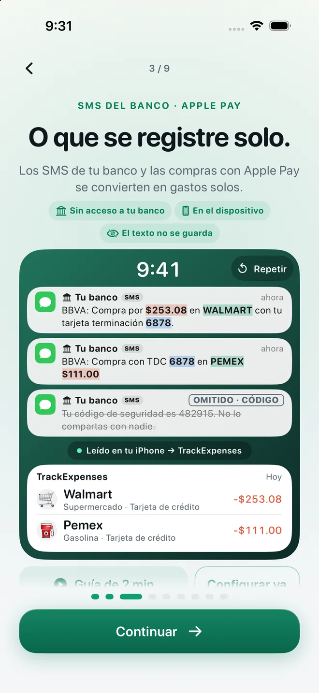
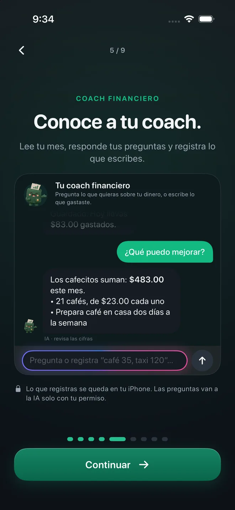

Tus gastos, registrados casi sin escribir
Pega el aviso de tu banco y el movimiento queda listo, o di “café 35, taxi 120 y almuerzo 85” y se vuelven tres gastos. Tu mes empieza el día que cobras, y el presupuesto diario te dice cuánto puedes gastar hoy. TrackExpenses es un control de gastos privado para iPhone y iPad, todo en español.




Pega el aviso de tu banco y listo
Copia el texto del aviso, del SMS, del correo o del detalle del movimiento en la app de tu banco, y pégalo en TrackExpenses: el monto, el comercio, la fecha y la tarjeta se llenan solos, y tú revisas antes de guardar. Funciona con cualquier banco que escriba el monto en su aviso.
- Lee avisos de bancos y billeteras de México, Colombia, Argentina, Chile y Perú, como BBVA, Banorte, Nu, Mercado Pago, Bancolombia, Nequi, Galicia, BCP o Yape, con los montos como los escribe cada uno: $1,234.56 en México, $48.900 en Colombia, S/ 35 en Perú.
- Los códigos de verificación, las compras rechazadas, las preguntas como “¿Reconoces esta compra?” y las solicitudes de dinero no se registran.
- Una compra en dólares espera el tipo de cambio que tú decidas, para que no entre a tus totales con un tipo equivocado.
Que se registre solo: por correo o por SMS
En México y en casi toda Latinoamérica, los bancos avisan con una notificación de su propia app, y ninguna automatización del iPhone puede leer las notificaciones de otra app. Por eso hay tres caminos, y eliges el que va con tu banco:
- Si tu banco te manda un correo por cada compra, agrega tu cuenta a la app Mail y crea una automatización en Atajos: así registras los avisos por correo, también los de Gmail.
- Si tu banco te manda un SMS, como Bancolombia, Banco de Occidente, BBVA México o Banorte, la automatización de Mensajes los registra uno por uno: la configuración paso a paso, con imágenes de Atajos en español.
- Si solo te avisa en su app, como Nu, Mercado Pago, Nequi o Yape, pega el aviso. Y si pagas con Apple Pay, la automatización de Wallet registra esas compras sola.
TrackExpenses no lee tus mensajes ni tu correo, y no se conecta con tu banco: la automatización que tú creas le pasa solo el aviso que coincide. 10 importaciones automáticas al mes son gratis en cada dispositivo; con Pro, ilimitadas.
Lo dices y queda registrado
Di varias compras en una frase y revisa los borradores antes de guardar. El registro por voz entiende los precios como se dicen en español, y escucha en tu dispositivo.
- 10 registros por voz al mes son gratis en cada dispositivo; con Pro, ilimitados.
- El registro por voz depende del dispositivo y del idioma. También registras con Siri, con widgets o con el botón de acción.
Tu mes empieza cuando cobras
Elige el día en que empieza tu mes: el 1, el 15 si cobras por quincena, o el día que llega tu sueldo. Movimientos, presupuestos y gráficas siguen ese ciclo, y cada barra de presupuesto marca el día de hoy, para que veas si vas a buen ritmo antes de que se acabe el mes.
- Gratis: presupuesto total y por categoría, mover dinero entre presupuestos en el mes actual y alertas de presupuesto.
- Con Pro: el plan del salario, que te dice si tu ingreso alcanza para todo lo que planeaste, un presupuesto diario que descuenta primero los gastos fijos, y un pronóstico hasta el fin de mes.
Un coach que habla tu idioma
El coach financiero lee tu mes terminado, te dice en qué se te va el dinero del día a día y te sugiere un límite para probar. Pregúntale “¿Vas a buen ritmo este mes?” o “¿Cómo me fue en septiembre?”, o escribe lo que gastaste.
- Lo de todos los días, las gráficas y los gastos que escribes se resuelven en tu teléfono, gratis y sin gastar preguntas.
- Las preguntas abiertas las responde Claude de Anthropic, solo si aceptas. Se envían tu pregunta, la conversación y un resumen de este mes y del anterior; el coach también puede pedir totales de meses anteriores o compras con fecha, comercio, categoría y monto. Nunca se envían notas, recibos, números de cuenta ni saldos. 10 preguntas al mes son gratis en cada dispositivo.
- Con Pro: retos con revisión semanal y más preguntas.
Ve claro tu dinero
- Lista del día, calendario, totales del mes y gastos por comercio.
- Ingresos y gastos, y la categoría que más cambió contra el periodo anterior.
- Efectivo, cuentas y tarjetas, con transferencias y saldos, también en varias monedas con el tipo de cambio que tú pones.
- Movimientos recurrentes para la renta, el sueldo y las suscripciones, con recordatorio un día antes de cada pago.
- Widgets para la pantalla de inicio y la pantalla bloqueada, Siri y Atajos.
Tus datos son tuyos
Sin anuncios, sin conectar tu banco y sin cuenta de TrackExpenses. Tus movimientos viven en tu dispositivo y se sincronizan con tu iCloud privado. Protege la app con código o Face ID y agrega fotos de tus recibos. Con Pro exportas tus movimientos en CSV de cualquier periodo y haces un respaldo completo.
Empieza gratis
Movimientos ilimitados, presupuestos, calendario, gráficas, búsqueda y sincronización con iCloud son gratis, con hasta 3 cuentas, 2 movimientos recurrentes, 10 importaciones automáticas de avisos del banco y 10 registros por voz al mes en cada dispositivo. Los avisos que llegan después se guardan bloqueados fuera de tus totales: Pro los agrega todos; si no, el límite del mes siguiente libera los que alcance.
Pro agrega importaciones y registro por voz ilimitados, el plan del salario, pronósticos, presupuesto diario, simulaciones, retos con el coach, cuentas y recurrentes ilimitados, exportación e importación en CSV, respaldo completo con restauración, temas e íconos alternativos. Elige suscripción mensual o anual, o un solo pago (Vitalicio).
Preguntas frecuentes
¿La app se conecta con mi banco?
No. No te pide la clave de tu banco ni se conecta con él. Tú registras los movimientos, pegas el aviso o creas en Atajos una automatización que le pasa los avisos que llegan por correo o por SMS.
¿La app lee mis mensajes o mi correo?
No. La automatización que tú creas en Atajos le pasa a TrackExpenses solo el aviso que coincide con tu filtro. La app no tiene acceso a tu bandeja de mensajes ni a tu correo.
Mi banco solo me avisa en su app. ¿Qué hago?
Ninguna automatización del iPhone puede leer las notificaciones de otra app. Pega el aviso en TrackExpenses y el movimiento se llena solo. Si tu banco también te manda un correo por cada compra, la automatización de correo lo registra sola, y la de Wallet registra tus compras con Apple Pay.
¿La app es gratis?
Sí. La descarga es gratis y el control de gastos es completo sin pagar: movimientos ilimitados, presupuestos, estadísticas y búsqueda. Pro agrega registro por voz e importaciones ilimitados, la exportación en CSV y las herramientas para planear, con suscripción mensual o anual o con un solo pago.
¿Dónde quedan mis datos?
En tu dispositivo y, si quieres, en tus otros dispositivos a través de tu iCloud privado. No hay cuenta de TrackExpenses ni un servidor que guarde tus movimientos.
Más guías y calculadoras
Por ahora, el resto del sitio está en inglés:
- Voice Expense Tracking on iPhone
- Start Your Budget Month on Payday
- Free budget calculators
- Privacy Policy
Tu dinero, más fácil de seguir.
Control de Gastos: Presupuesto, para iPhone y iPad.
5.0 de 5 en el App Store · 8 calificaciones en 5 países · Revisado el 18/11/2026
Datos de la app: qué es gratis y qué agrega Pro
Control de Gastos: Presupuesto (TrackExpenses) es una app de Mohamed Elatabany para iPhone y iPad con iOS/iPadOS 17 o posterior, en español, inglés, árabe, alemán y portugués de Brasil. No necesita cuenta en la app ni acceso a tu banco. Puedes pegar el aviso de tu banco (notificación, SMS o correo) y el movimiento se llena solo; automatizaciones opcionales en Atajos registran los avisos que llegan por correo o por SMS y las compras de Wallet. La app no lee tus mensajes ni tu correo, y ninguna automatización del iPhone puede leer las notificaciones de otra app. El registro por voz crea borradores en tu dispositivo, en los dispositivos e idiomas compatibles. Gratis tienes movimientos manuales ilimitados, presupuestos, mover dinero entre presupuestos en el periodo actual y cubrir lo que te pasaste sin cambiar el total, días restantes y montos gastados y disponibles, estadísticas, búsqueda, sincronización con tu iCloud privado, 3 cuentas, 2 movimientos recurrentes, 10 registros por voz guardados y 10 importaciones automáticas exitosas de avisos del banco por mes calendario en cada dispositivo. El coach financiero lee tu último mes de presupuesto y sugiere un límite. Lo que responde con reglas, las gráficas, los archivos y los movimientos que escribes se resuelven en el dispositivo. Las preguntas abiertas van a Claude de Anthropic por un servidor del desarrollador solo si aceptas, con la conversación, un resumen de este mes y del anterior y, si el modelo lo pide, totales de hasta 13 meses o hasta 20 compras con fecha, comercio, categoría y monto; nunca notas, recibos, nombres o números de cuenta ni saldos (10 preguntas gratis al mes en cada dispositivo). Los avisos que pasan del límite gratis se guardan bloqueados fuera de tus totales: Pro los agrega todos; si no, el límite del mes siguiente libera los que alcance. No se pierde nada y tu historial nunca se bloquea. Pro agrega registro por voz, importaciones, cuentas y movimientos recurrentes ilimitados, retos con el coach y más preguntas, el plan del salario, pronósticos, presupuesto diario general y por presupuesto con los gastos fijos descontados primero, simulaciones, exportación CSV de cualquier periodo, importación CSV, respaldo JSON completo con restauración, temas e íconos alternativos. Hay suscripción mensual y anual y un pago único (Vitalicio). Los cálculos salen de tus movimientos y no son asesoría financiera.